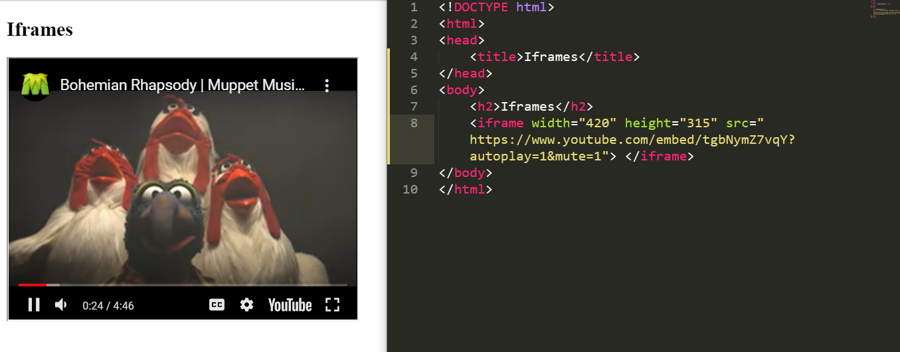
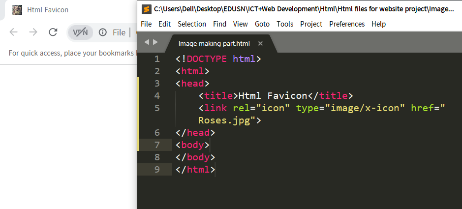

The term media refers to various means of communicating and disseminating information, such as text, images, graphics, audio, video, and animation. All these mediums of communication are collectively termed as multimedia.
In other words, the term multimedia encompasses all means of communication, from a single magazine containing text and images to an advance application containing audio, video, and graphics.
A combination of video and audio files can also be used in websites to gain popularity in terms of viewership or provide information and entertainment to the users.
HTML helps you to add multimedia files on your website by providing various multimedia tags. These tags include AUDIO, VIDEO, EMBED, and OBJECT.
The AUDIO tag is used to display the audio file on the Web page, whereas the VIDEO tag is used to display the video files on the Web page.
The EMBED and OBJECT tags display the multimedia files on a Web page as well as embed the files from other websites.
The <video> tag is used to embed video content in a document, such as a movie clip or other video streams. The <video> tag contains one or more
The iframe in HTML stands for Inline Frame. The ” iframe ” tag defines a rectangular region within the document in which the browser can display a separate document, including scrollbars and borders. An inline frame is used to embed another document within the current HTML document.
A favicon is a small image displayed next to the page title in the browser tab A common name for a favicon image is "favicon.ico"
Tip: it is a small image, so it should be a simple image with high contrast.
controls attribute adds video controls, like play, pause, and volume
<source> element - specify dlternative video files which the browser may choose from. The browser will use the first recognized format.
to start a video automatically, use the autoplay attribute
Add muted after autoplay to start playing automatically (but muted)